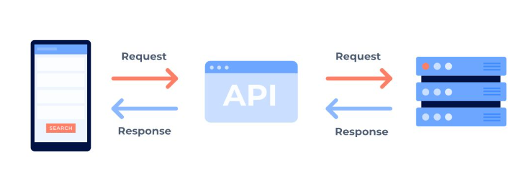
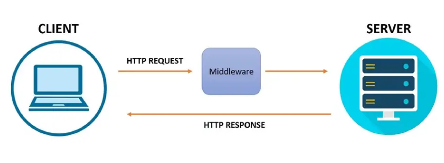
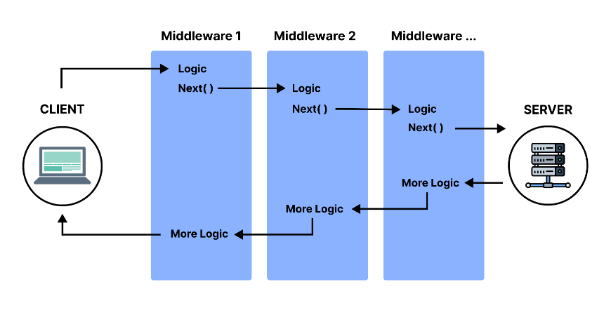

Pemrograman Golang Web dan API
1 Clean Architecture
1.1 Pengertian Clean Architecture
Clean Architecture adalah desain software yang memisahkan elemen-elemen menjadi beberapa lapisan (layer). Tujuan penting dari Clean Architecture adalah memisahkan antara layer business logic dan layer presentasi (delivery mechanism).
Keuntungan Clean Architecture:
Highly Testable: kita dapat membuat test cases untuk setiap layer guna menentukan di mana error terjadi.
Framework Independent: Clean architecture tidak menggunakan framework atau tergantung pada framework tertentu, jadi kita bisa mengubah framework kapan saja.
Database Independent: memungkinkan kita mengganti database tanpa membuat perubahan besar pada source code, misalnya dari SQL ke database NoSQL.
UI Independent: UI framework ada di layer terluar dan kita dapat mengubahnya dengan mudah karena sudah terpisah.
1.2 Penerapan Clean Architecture
MVC
Model Clean Architecture yang paling sering digunakan adalah model MVC (Model View Controller), yaitu sebuah pola arsitektur dalam membuat sebuah aplikasi dengan cara memisahkan kode menjadi tiga bagian yang terdiri dari
Model: bagian yang berhubungan dengan data, biasanya berisi class yang berhubungan dengan database.
View: bagian yang berhubungan dengan tampilan, biasanya berisi file HTML, CSS, dan Javascript.
Controller: bagian yang berhubungan dengan logika aplikasi, biasanya berisi class yang mengatur alur aplikasi.
Layer MVC
./app
├── controller
│ └── userController.go
├── model
│ └── user.go
├── repository
│ └── userRepo.go
├── view
│ └── userView.go
Ini adalah tata letak yang paling umum dalam implementasi MVC di mana kita memisahkan resource berdasarkan layer MVC, biasanya digunakan pada aplikasi yang belum terlalu kompleks.
2 REST API
2.1 Pengertian API
API (Application Programming Interface) merupakan interface yang dapat menghubungkan satu aplikasi dengan aplikasi lainnya. Berperan sebagai perantara antar berbagai aplikasi berbeda, baik dalam satu platform yang sama atau lintas platform.
Perumpamaan yang bisa digunakan untuk menjelaskan API adalah seorang pelayan di restoran. Tugas pelayan tersebut adalah menghubungkan tamu restoran (client) dengan juru masak (server).
Jadi, tamu cukup memesan makanan sesuai daftar menu yang ada dan pelayan memberitahukannya ke juru masak. Nantinya, pelayan akan kembali ke tamu tadi dengan masakan yang sudah siap sesuai pesanan.

2.2 Pengertian REST
REST (REpresentational State Transfer) API adalah arsitektur perangkat lunak yang di dalamnya mendefinisikan aturan-aturan untuk membuat web service.
API dapat dikatakan “RESTful” jika memiliki fitur berikut :
Client-Server: REST memisahkan antara client dan server, sehingga keduanya dapat berkembang secara independen.
Stateless: Setiap request dari client ke server harus berisi semua informasi yang diperlukan untuk memahami request tersebut.
Cacheable: Server harus menandai data sebagai cacheable atau non-cacheable.
2.3 Why use RESTful API?
Skalabilitas: Sistem yang menerapkan REST API dapat menskalakan secara efisien karena REST mengoptimalkan interaksi client-server. Statelessness menghapus beban server karena server tidak perlu menyimpan informasi request client di masa lalu. Dan pembuatan cache yang dikelola dengan baik di sisi client. Semua fitur ini mendukung skalabilitas tanpa menyebabkan gangguan komunikasi yang mengurangi performa.
Fleksibilitas: Layanan web RESTful menyederhanakan dan memisahkan berbagai komponen server sehingga masing-masing bagian dapat berkembang secara mandiri. Perubahan platform atau teknologi pada aplikasi server tidak mempengaruhi aplikasi client.
Independensi: Implementasi API menggunakan REST bersifat independen terhadap teknologi yang digunakan. Kita dapat menulis baik aplikasi client dan server dalam berbagai bahasa pemrograman tanpa mempengaruhi desain API. Kita juga dapat mengubah teknologi mendasar di kedua sisi tanpa mempengaruhi komunikasi.
3 Pengenalan Gin Gonic (Framework Golang untuk REST API)
3.1 Apa itu Gin Gonic?
Gin adalah framework yang dikembangkan oleh komunitas Golang. Gin dibuat untuk memudahkan pengembangan aplikasi web. Sebelumnya kita sudah belajar tentang HTTP server Golang standar, dengan menggunakan Gin kita dapat membuat aplikasi web dengan lebih cepat dan mudah karena memiliki banyak fitur yang dapat memudahkan pengembangan aplikasi web. Dokumentasi resmi dari Gin dapat dilihat di sini.
3.2 Mengapa menggunakan Gin?
Cara kerja Gin sama seperti HTTP server Golang standar, hanya saja Gin memiliki beberapa kelebihan dibandingkan dengan HTTP server Golang standar, yaitu:
Jika menggunakan HTTP server, tidak ada built-in support di Golang untuk mengatasi routing berdasarkan regular expression atau “pattern”.
Gin memiliki performa yang lebih baik dan efisien dibandingkan dengan HTTP server Golang standar, karena Gin menggunakan routing yang lebih cepat dan memiliki arsitektur yang lebih baik untuk memproses request.
Gin menyediakan fitur middleware, yang memudahkan pengembangan aplikasi web dengan menambahkan logika pada tahap-tahap tertentu dalam proses request-response (ini akan dijelaskan di materi selanjutnya).
Gin memiliki komunitas yang aktif dan membantu, memudahkan pengembangan aplikasi web dan mempercepat proses pemecahan masalah.
3.3 Perbedaan Gin dengan HTTP Server Golang Standar
Kode HTTP server Golang standar:
package main
import (
"fmt"
"net/http"
)
func Handler(w http.ResponseWriter, r *http.Request) {
// handle only get request
if r.Method != http.MethodGet {
w.WriteHeader(http.StatusMethodNotAllowed)
return
}
w.WriteHeader(http.StatusOK)
fmt.Fprintf(w, `{"message": "Hello World"}`)
}
func main() {
mux := http.NewServeMux()
mux.HandleFunc("/hello", Handler)
http.ListenAndServe(":8080", mux)
}Kode HTTP server menggunakan Gin:
package main
import (
"github.com/gin-gonic/gin"
)
func main() {
r := gin.Default()
r.GET("/hello", func(c *gin.Context) {
c.JSON(http.StatusOK, gin.H{ "message": "Hello World" })
})
r.Run(":8080")
}Dari kedua kode di atas, kita dapat melihat perbedaan antara HTTP server Golang standar dan Gin. Gin memiliki fitur yang lebih lengkap dan mudah digunakan, sehingga memudahkan pengembangan aplikasi web.
Untuk latihan menggunakan golang dapat dilihat di sini
4 Middleware
4.1 Pengertian
Middleware adalah sekumpulan logika yang berjalan di antara request dan response dalam aplikasi web. Dalam Golang, middleware dapat diterapkan pada sebuah web server untuk memproses serangkaian request sebelum diarahkan ke handler utama. Dalam satu aplikasi bisa terdapat lebih dari satu middleware, sehingga request akan dijalankan melalui beberapa middleware secara berurutan sebelum sampai ke handler utama.
request => middleware 1 => middleware 2 => middleware ... => handler => response
4.2 Kenapa menggunakan Middleware?
Middleware memudahkan web server untuk mengelola & memproses request dan response dengan lebih efisien dan efektif. Middleware juga dapat memfasilitasi integrasi antara aplikasi web dengan sistem lain seperti database, sistem pembayaran, dan lainnya. Oleh karena itu, middleware di web server sangat penting untuk memastikan bahwa aplikasi web berjalan dengan baik dan aman.
Middleware juga dapat meng-handle beberapa kasus sejenis menjadi satu. Misalnya, kita memiliki beberapa route yang membutuhkan autentikasi. Kita bisa membuat middleware untuk melakukan autentikasi dan menambahkan middleware tersebut ke setiap route yang membutuhkan autentikasi. Dengan begitu, kita tidak perlu menulis ulang kode autentikasi untuk setiap route yang membutuhkan autentikasi.
Secara umum, middleware sering digunakan untuk kasus autentikasi dan otorisasi. Middleware juga dapat digunakan untuk melakukan tugas seperti enkripsi, caching, kompresi, integrasi dengan sistem lain, manajemen sesi, dan load balancing.
4.3 Cara Kerja Middleware

Arsitektur middleware terdiri dari tiga komponen utama: client, web server, dan middleware:
Client: Client (Klien) adalah perangkat yang mengirimkan permintaan ke web server, misalnya browser web.
Server: Server atau Web Server adalah sistem yang menerima permintaan dari klien dan mengirimkan respons yang sesuai.
Middleware: Middleware adalah perantara antara klien dan web server yang memproses permintaan dari klien, memvalidasi autentikasi dan otorisasi, dan mengirimkan respons yang sesuai. Middleware juga dapat menambahkan fitur tambahan seperti enkripsi, caching, dan kompresi.

Untuk middleware yang lebih dari 1 (middleware chain), klien mengirimkan permintaan ke middleware pertama. Middleware pertama memproses permintaan dan mengirimkan permintaan yang valid ke middleware kedua. Middleware kedua memproses permintaan dan mengirimkan permintaan yang valid ke middleware ketiga. Dan seterusnya sampai middleware terakhir.
Middleware terakhir mengirimkan permintaan yang valid ke web server. Web server mengirimkan respons kembali ke middleware terakhir, dan kemudian berlanjut sampai ke middleware awal. Terakhir, hasil response dari middleware awal di kirimkan ke klien.
Pada setiap middleware, dapat berisi logic sebelum diarahkan ke middleware selanjutnya. Logic ini disebut middleware logic before. Kemudian, middleware juga dapat berisi logic setelah middleware mendapatkan response dari web server. Logic ini disebut middleware logic after. Untuk lebih jelasnya dapat dilihat pada gambar di atas.
4.4 Contoh Middleware
package main
import (
"github.com/gin-gonic/gin"
"net/http"
)
func main() {
r := gin.Default()
// Middleware
r.Use(func(c *gin.Context) {
c.JSON(http.StatusOK, gin.H{ "message": "Middleware Logic Before" })
c.Next()
c.JSON(http.StatusOK, gin.H{ "message": "Middleware Logic After" })
})
r.GET("/hello", func(c *gin.Context) {
c.JSON(http.StatusOK, gin.H{ "message": "Hello World" })
})
r.Run(":8080")
}Pada contoh kode di atas, kita membuat middleware yang berisi logic sebelum dan sesudah request diarahkan ke handler. Logic sebelum request diarahkan ke handler berada di dalam blok c.Next(), sedangkan logic setelah request diarahkan ke handler berada di luar blok c.Next().
Untuk latihan menggunakan golang dapat dilihat di sini